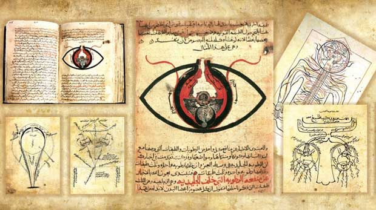
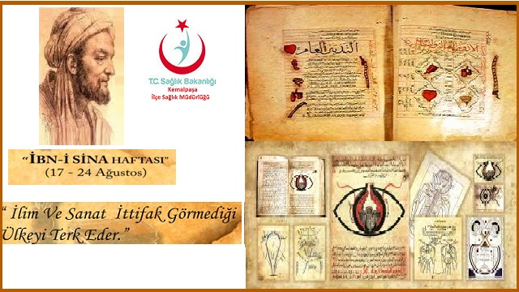

Ibnu Sina (980-1037) dikenal juga sebaga "Avicenna" di Dunia Barat adalah seorang filsuf, ilmuwan dan dokter kelahiran persia (sekarang Iran). Ia juga seorang penulis yang prokduktif yang sebagian besar karyanya adalah tentang Filosofi dan pengobatan. Bagi banyak orang, dia adalah "Bapak pengobatan Modern." Karyanya yang sangat terkenal adalah al-Qanun fi at-Tibb yang merupakan Referensi di Bidang kedokteran selama berabad-abad
Ibnu sina bernama Lengkap Abu 'ALI-Husayn bin 'Abdullah bin Sina. Ibnu sina lahir pada 9870 di Afsyahnah daerah dekat Bukhara, sekarang wilayah Uzbekistan dan meninggal bulan juni 1037 di hamadan,persia (Iran).
Dia adalah pengarang dari 450 buku pada beberapa pokok bahasan besar. Banyak di antaranya memusatkan pada filosofil dan kedokteran. "George Sarton meyebut Ibnu sina " iLmuwan paling terkenal dari islam dan salah satu yang paling terkenal pada semua bidang, tempat dan waktu". Karyanya yang paling terkenal adalah the book of Healing dan The canon of Medicine (Al- Qanun fi at Tibb ).
 